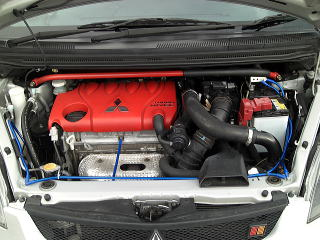
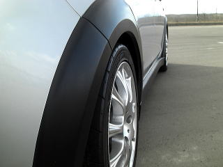
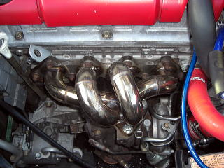
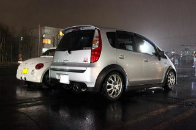
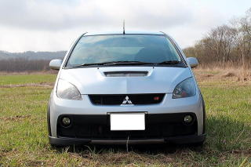
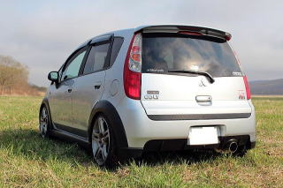
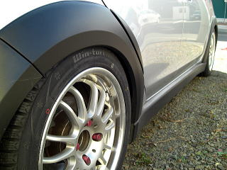

|
|
| ２０１１年３月６日 コルト ラリアート バージョンＲが納車されました。 | ２００７年９月登録車です。 |
| 納車時は純正ホイルに１９５／５０－１６のアイスナビを装着しています。 | |
| 内装です。マニュアル車なのでフルスケールのメータです。 | ナビです。 |
| Defi-Link Meter ADVANCE BF ターボ計のアップ画像です。 | ＣＥＬＬＳＴＡＲ ＡＳＳＵＲＡ ＡＲ－５９０ＳＴを装着しました。 |
|  | |
| Remixのアースキットを使用して装着しました。 ３０分位で完成です。 |
夏タイヤに交換。タイヤは純正のアドマンネオバ。ホイールはＭＯＭＯ Ｍ１です。 |
| 結構明るいシルバーです。 | |
|  | |
| サイズは、７Ｊ＋３８です。 フロントはスペーサを入れていません。 |
リアは２ｍｍのスペーサを入れています。 フロントリア共に余裕がありそうですが、これ以上出すとフェンダーの折り返しに接触しそうです。 |
 |
|
| 駐車場が暗いのでバックランプを入れ替えました。 | 点灯時はこうなります。 |
| タイヤをヨコハマＤＮＡ Ｓドライブ 195/50-16に変更しました。リアは７ｍｍ，フロントは２ｍｍのスペーサを入れました。 この画像はリアです。 走行時のノイズが大変静かになり、タイヤハウスの空間も若干少なくなりました。運転しやすいです。 |
フロントです。 |
| デッドニングしました。 エーモンの製品です。 今までの経験のとおり、音がはっきりして低音もしっかり鳴るようになりました。 ついでに、ニードルフェルトをドアパネルに貼り付けました。結果は、走行時に若干静かになり、ドアを閉めるときの音が高級車のようになりました。 |
７３Ｇａｒａｇｅ オリジナルチタンカッター １１５Φ用を純正マフラーカッターの上に被せました。 |
| 真後ろから除くと純正のカッターが見えます。 つや消し黒を純正カッターに塗ったのですが、やはり覗くと見えてしまいます。 |
ＦＬＵＸＬＥＤ１２個を使ったものを２つ装着しました。価格は６００円とかなり安いです。 電子パーツ販売所 blue sky 2号店での購入です。 |
| かなり明るいです。スペース的には丁度良い大きさでした。 | フォグにＩＰＦのイエローを入れました。 |
| 点灯した画像です。 | マフラーカッターを装着しましたが、純正カッターが目立つので、インナーサイレンサーを装着しました。 内側の長いパイプは切り落としています。 |
| 真後ろからです。夜だったので、良くわかりません。 | Defi-Link Meter ADVANCE BF 油温計を装着しました。 |
|
YR-Advance 簡易ブーストアップキットを装着しました。ＨＩの青を選びました。
装着前 : ピークで0.8k位, 0.7k位で安定 キット : ピークで1.05k位, 0.95k位で安定 インテークパイプ装着時にエンジン警告灯が付いたので、現在は取り外し済。 |
ＨＫＳリーガルを入れました。 106φなので、結構迫力ありますが、見た目は派手さはなく好きです。 音は低音が結構気持ちよい音がしますが、静かなほうなので気に入っています。 エンジンは良く回るようになりました。なぜか低速トルクもかなり太くなっています。 純正のマフラーに水が沢山溜まっていたのも原因かもしれません。 |
 |
|
| COLT-SPEEDのイグニッションブースターです。かなり車が軽くなりました。 | バッテリーにくくり付けています。 |
| ボンネットのフィンパネルをアルミホイール用のスプレーとクリア塗装掛けました。 | こんな感じです。 |
| エーモン工業の静音計画をつけました。 感想はエンジン音が小さくなったおかげでマフラーの音が強調されました。 また見た目も良いと思います。 |
インター・ラピスのインテークパイプを装着しました。ブーストの立ち上がりが早くなりました。 |
| ブリッツのSUS POWER CORE TYPE LM を装着しました。 かなりいい音します。 |
同時にインターラピスのブローオフバルブも装着。同メーカのシリコンバキュームホース6ミリでドレスアップしています。 |
| エンジンルームの画像です。 | 外気温が知りたいので、装着してみました。 |
| アールズのラジエターキャップをつけました。 | Defi-Link Meter ADVANCE BF 油圧計を装着しました。 |
| インター・ラピスのサクションパイプを装着しました。ブーストの立ち上がりが早くなりました。 | RRPのチタンエキマニカバーを装着。ものの１０分で完了。見た目綺麗になりました。 |
| エンジンルーム | 変更⇒ＢＬＩＴＺ ＤＡＮＰＥＲ ＺＺ－Ｒを入れました。 |
| 指１本入るようにセティング | いい感じで落ちてます。 |
| ただ、ちょっとやわらかいので、減衰力の調整が必要です。 | 今３２段階中の１５に設定していますが、これだと純正よりもかなりふらつきが目立ちます。 |
| 自宅駐車場で下回りをあてるので、フロント車高調整。 | アッパーマウントからロアブラケットまでの間隔 フロント：33ﾐﾘ リア：38ﾐﾘ 減衰力１６戻しに変更。 |
| 右後横 | 左後横 |
| 正面 | リア |
| 真横 | 右前フェンダー |
| ゼロウォータでガラスコーティングを施工 | ２台とも塗りました。 |
| 綺麗になったので、記念撮影 | ツヤツヤです。 |
| この下からの角度気に入ってます。 | 冬自宅完了です。 |
|  |  |
| インター・ラピスのエキマニを装着しました。 | セットでラジエターホースも入れ替えています。 |
 |
|
| オリジナルパーツショップTAKAのシフトブーツ。４面カーボン調ブラックダブルステッチです。 | エキマニ装着後に加工してアールズチタンエキマニカバーを取り付け。 |
| みんカラお友達手作りのＴ２０バックランプです。ＬＥＤ１８発のものです。とっても明るいです。 | 接写。部品代だけにして頂きました。ありがとう御座います。 |
| インター・ラピスのブローバイホースを装着しました。 | フェデラル595ＲＳ-Ｒにタイヤを替えました。 結構静かです。 |
| グリップは良さそうですが、装着したばかりなのでまだ分かりません。 | インターラピスのタービンアウトレットパイプ（センサーアダプター付）です。排気温計も付けました。 |
| autobahn88 の排気温計です。Defiの３連と並べましたが、色がちょっと合わなかったです。まだ外気２度の気温で６０００回転以上で走っても７００度程度でした。 | カーメイトのナンバーフレームです。Ｒ２０００という商品です。曲率半径Ｒ２０００です。 |
| BLITZ Touch-B.R.A.I.Nです。 様々な情報を表示可能。診断コネクタに差し込むだけです。 |
今は、燃費、水温、吸気温、速度、パワーを表示させています。 |
| 中国製MIKROUNA（ミクローナ）のＨＩＤ６０００Ｋにバーナ入替をしました。純正より暗いと思いますが、白くなりました。 | 以前のカーボンフィルムにしわが出てきたので、３Ｍのダイノックをセンターパネルに貼りつけました。よく伸びるので、しわになりにくいです。 |
| インター・ラピスのボンネットフードダンパーです。開け閉めが楽になりました。 | ３Ｍのダイノックシートをテールゲートの未塗装部分に貼り付けました。 この部分は白化しやすいので、効果大です。 |
| ３Ｍのダイノックシートをピラーに貼り付けました。傷だらけだったので、隠せました。 | 安物のバッテリーだったので、caos lite に交換しました。 |
| インター・ラピスのブローオフバルブ接続ホースを導入しました。 | １５０Ｗアンプ内蔵のサブウーファーです。 |
| ＲＡＬＬＹ ＳＰＡＲＣＯ 装着画像１ | ＲＡＬＬＹ ＳＰＡＲＣＯ 装着画像２ |
| ＲＡＬＬＹ ＳＰＡＲＣＯ 装着画像３ | ＲＡＬＬＹ ＳＰＡＲＣＯ 装着画像４ |
 |
|
| 純正アクセントドアスイッチパネルカーボン調です。 | 純正アクセントエアアウトレットリングカーボン調です。 |
| 助手席側。 | 内装全体 |
| 8ｍｍスペーサー時の画像 | ワイドトレッドスペーサー15ｍｍの画像 |
|  | |
| 娘の車と撮影 | 娘の車と撮影 |
| 娘の車と撮影 | 娘の車と撮影 |
| フロント車高を3mm下げ（１） | フロント車高を3mm下げ（２） |
| スタットレス用にＰＩＡＡ ＦＲ－７を購入。 | ＰＩＡＡ ＦＲ－７ |
| リア アイスナビ１９５／５０－１６+ １６インチ ７Ｊ ＋４２ ＋５ｍｍのスペーサー |
リア アイスナビ１９５／５０－１６+ １６インチ ７Ｊ ＋４２ ＋１５ｍｍのワイトレ フェンダー紙一重 |
| フロントにキャンバーを付けた。 | ボンネットスポイラー風。１００均段差解消マット２連。 |
| ＡＴＲ ＳＰＯＲＴ ２０５／４０－１７ レーシングスパルコＤＳ－１ １７インチ ７Ｊ ＋３５ PCD:114.3 4H ※フロント・リア共 ５ｍｍスペーサー |
リアはあと３ミリミリ程の余裕があると思います。 |
|  | |
| R's/ RRP (アールズレーシングサービス) リアキャンバーシム 装着 | １７インチホイール装着後の写真（１） |
|  | |
| １７インチホイール装着後の写真（２） | １７インチホイール装着後の写真（３） |
| １７インチホイール装着後の写真（４） | １７インチホイール装着後の写真（５） |
|  | |
| HIFLY WIN TURI ２１２ １９５／５０－R１６ | スタッドレス装着画像 |
| スタッドレス装着画像 | スタッドレス装着画像 |
| ヤック リアルカーボン装着 | 夏タイヤ交換 |
| 2016年4月10日 | 2016年9月3日 交換前 |
| 2016年9月3日 交換後 |
2016年10月2日 ワーク XSA戦 クリスタルシルバー １７インチ ７Ｊ ＋４２（リム39mm) PCD:114.3 4H |
 |
|
| 2017.3.20 タイヤ交換 | |
| 2017.4.2 ドアストライカー | 2017.5.1 |
| 2017.9 ウィンカー塗装 | |
| 2018.10.8 売却前 | |
 |
走行89,500キロ |